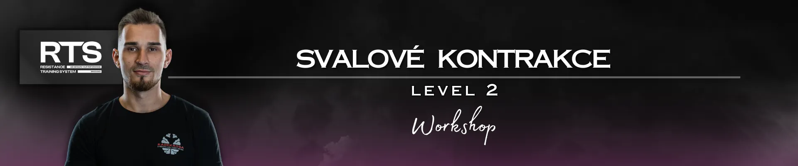

Svalové kontrakce - level 2 !

Pokračování kultovního workshopu! Pro všechny, kteří chtějí prohloubit své znalosti o svalových kontrakcích a převést nové poznatky do praxe se svými klienty. Není podmínkou navštívit level 1 pro účast na levelu 2.
› Datum a místo konání:
BRNO (Česko) - 15.11.2026 - Strange Training
› Pro koho: Silově kondiční trenéři, fyzioterapeuti
› Témata:
- Aktuální vědecké poznatky o svalových kontrakcích
- Adaptace šlach v kontextu jejich délky a typu kontrakce (teorie + praxe)
- Time in Zone v kontextu síly a mobility
- Running Specific Isometric (teorie + praxe s VALD performance testovacím zařízením)
- Jaký typ izometrie zvolit pro odlišné sporty a proč je to důležité
- Typ kontrakcí pro fáze sprintu akcelerace / upright sprinting
- Mytochondria density training - trénink pro hustotu mytochondrií - rehab/performance/hypertrophy (teorie + praxe)
- Metodiky rychlé relaxace x kontrakce (teorie + praxe)
- Metoda drop&catch - proč zde jako trenéři děláme chybu
- Case study s Milošem Petráškem: Rehab to Performance (3 měsíce po zranění na největší MMA akci Oktagon58 - Eden)
- V čem vynikají nejúspěšnější sportovci na světě
- Programming kontrakcí a rychlých relaxačních metod (Off season / Pre season / In season)
- General rehab continuum (jaké kontrakce a relaxační metody volit v časovém horizontu při rehabilitaci)
- Tuhost - její odlišné vnímání napříč obory
- Co nám říká čelist při maximálním výkonu
- Míšní reflexy
- A další...
› Kapacita: Omezená
*Účastníci semináře získají certifikát o absolvování.
*V případě dotazů a nejasností, kdykoliv se obraťte na organizátora Radka Rosu (IG: @radek_rosa_strong)